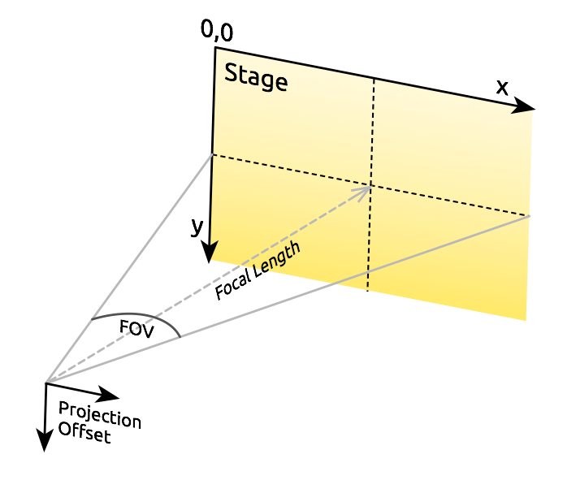
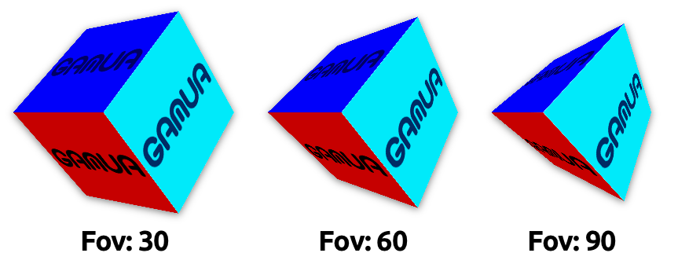
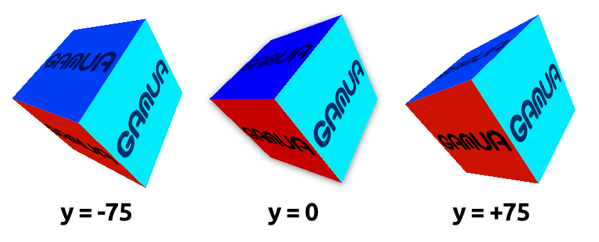

var sprite:Sprite3D = new Sprite3D(); (1)
sprite.addChild(image1); (2)
sprite.addChild(image2);
sprite.x = 50; (3)
sprite.y = 20;
sprite.z = 100;
sprite.rotationX = Math.PI / 4.0;
addChild(sprite); (4)Sprite3D
All display objects that we looked at in the previous sections represent pure two-dimensional objects. That’s to be expected — Starling is a 2D engine, after all. However, even in a 2D game, it’s sometimes nice to add a simple 3D effect, e.g. for transitioning between two screens or to show the backside of a playing card.
For this reason, Starling contains a class that makes it easy to add basic 3D capabilities: Sprite3D. It allows you to move your 2D objects around in a three dimensional space.
Basics
Just like a conventional Sprite, you can add and remove children to this container, which allows you to group several display objects together. In addition to that, however, Sprite3D offers several interesting properties:
-
z — Moves the sprite along the z-axis (which points away from the camera).
-
rotationX — Rotates the sprite around the x-axis.
-
rotationY — Rotates the sprite around the y-axis.
-
scaleZ — Scales the sprite along the z-axis.
-
pivotZ — Moves the pivot point along the z-axis.
With the help of these properties, you can place the sprite and all its children in the 3D world.
| 1 | Create an instance of Sprite3D. |
| 2 | Add a few conventional 2D objects to the sprite. |
| 3 | Set up position and orientation of the object in 3D space. |
| 4 | As usual, add it to the display list. |
As you can see, it’s not difficult to use a Sprite3D: you simply have a few new properties to explore. Hit-testing, animations, custom rendering — everything works just like you’re used to from other display objects.
Camera Setup
Of course, if you’re displaying 3D objects, you also want to be able to configure the perspective with which you’re looking at those objects. That’s possible by setting up the camera; and in Starling, the camera settings are found on the stage.
The following stage properties set up the camera:
-
fieldOfView — Specifies an angle (radian, between zero and PI) for the field of view (FOV).
-
focalLength — The distance between the stage and the camera.
-
projectionOffset — A vector that moves the camera away from its default position, which is right in front of the center of the stage.

Figure 1. Those are the properties that set up the camera.
Starling will always make sure that the stage will fill the entire viewport. If you change the field of view, the focal length will be modified to adhere to this constraint, and the other way round. In other words: fieldOfView and focalLength are just different representations of the same property.
Here’s an example of how different fieldOfView values influence the look of the cube from the Starling demo:

Figure 2. Different values for fieldOfView (in degrees).
Per default, the camera will always be aligned so that it points towards the center of the stage. The projectionOffset allows you to change the perspective away from this point; use it if you want to look at your objects from another direction, e.g. from the top or bottom.
Here’s the cube again, this time using different settings for projectionOffset.y:

Figure 3. Different values for projectionOffset.y.
Limitations
Starling is still a 2D engine at its heart, and this means that there are a few limitations you should be aware of:
-
Starling does not make any depth tests. Visibility is determined solely by the order of children.
-
You need to be careful about the performance. Each Sprite3D instance interrupts batching.
However, there’s a trick that mitigates the latter problem in many cases: when the object is not actually 3D transformed, i.e. you’re doing nothing that a 2D sprite couldn’t do just as well, then Starling treats it just like a 2D object — with the same performance and batching behavior.
This means that you don’t have to avoid having a huge number of Sprite3D instances; you just have to avoid that too many of them are 3D-transformed at the same time.